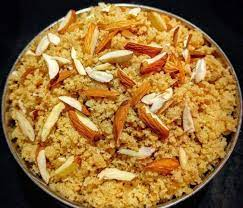

Churma

Description
Churma is nothing but the sweet made from the baati. Basic churma has the baatis crushed and sugar added to it. It pairs well with the spicy and savory dal baati.
Ingredients
- 2 cups Whole Wheat Flour, (or a combination of flours)
- 1 cup Sooji (Semolina/ Rava)
- 1/2 cup Ghee
- 1 teaspoon Ajwain (Carom seeds)
- 1 teaspoon Baking powder
- Salt